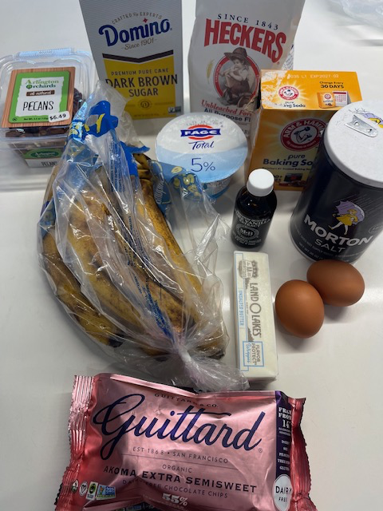

Birthday Edition · v1.0.0
The Banana Bread Repository
A thoroughly tested banana bread implementation featuring brown butter, toasted pecans, and an irresponsible amount of chocolate.
A reproducible workflow for converting overripe bananas into happiness.
StatusStable
Version1.0.0
Last UpdatedBirthday Edition 🎂
Runtime Requirements
🍌 3 bananas
🧈 brown butter
🌰 pecans
🍫 chocolate
⏳ patience
✦
✦
✧

Dependencies
Ingredients
Makes about 2 small loaves or 1 large loaf.
Implementation Guide
Step-by-step process
Artifacts